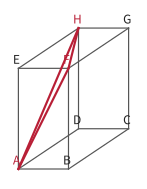

ホーム ＞ 数学I ＞ 図形の面積・空間図形の計量
例題 3図形と計量 直方体の切り口の面積と垂線
直方体 ABCD-EFGH で \(AB=1,\ AD=2,\ AE=2\) とする。△AFH の面積 \(S\) と、頂点 E から平面 AFH に下ろした垂線の長さ \(h\) を求めよ。

解き方（まず考え方）
△AFH の3辺は直方体の面の対角線。3辺の長さを三平方の定理で求め、二等辺三角形などの形に気づく。
垂線の長さは四面体 E-AFH の体積を2通りに表す：底面を △AEF（または EF・EH・EA が直角に交わる面）として求めた体積と、底面を △AFH として \(\dfrac13\cdot S\cdot h\) で表した体積が等しい。
コツ高さが直接わからない三角すいは、体積を「見やすい底面」と「求めたい底面」の2通りで書き、等しいとおく。
解答
STEP 1 △AFH の3辺を求める
\[AF=\sqrt{AB^2+AE^2}=\sqrt{1+4}=\sqrt5\]\[AH=\sqrt{AD^2+AE^2}=\sqrt{4+4}=2\sqrt2\]\[FH=\sqrt{EF^2+EH^2}=\sqrt{1+4}=\sqrt5\]
\(AF=FH=\sqrt5\) の二等辺三角形。
STEP 2 面積を求める
AH の中点を M とすると \(FM\perp AH\)。
\[FM=\sqrt{AF^2-AM^2}=\sqrt{5-(\sqrt2)^2}=\sqrt{5-2}=\sqrt3\]\[S=\dfrac12\cdot AH\cdot FM=\dfrac12\cdot2\sqrt2\cdot\sqrt3=\sqrt6\]STEP 3 四面体 E-AFH の体積（底面を △EFH として）
E で3辺 \(EA,\ EF,\ EH\) は互いに直角（長さ2, 1, 2）。底面を △EFH、高さを EA とする。
\[V=\dfrac13\cdot\left(\dfrac12\cdot EF\cdot EH\right)\cdot EA=\dfrac13\cdot\left(\dfrac12\cdot1\cdot2\right)\cdot2=\dfrac23\]STEP 4 底面を △AFH として垂線 \(h\) を求める
\[V=\dfrac13\cdot\sqrt6\cdot h=\dfrac23\ \Rightarrow\ h=\dfrac2{\sqrt6}=\dfrac{2\sqrt6}6=\dfrac{\sqrt6}3\]
【答案（テストに書く形）】
\[S=\sqrt6,\quad h=\dfrac{\sqrt6}3\]答
練習問題 3
- \(AB=2,\ AD=3,\ AE=6\ \text{のとき},\ \triangle AFH\ \text{の面積と}\ E\ \text{から平面}\ AFH\ \text{への垂線}\)
- \(AB=1,\ AD=1,\ AE=1\ \text{のとき},\ \triangle AFH\ \text{の面積と}\ E\ \text{から平面}\ AFH\ \text{への垂線}\)
- \(AB=1,\ AD=2,\ AE=3\ \text{のとき},\ \triangle AFH\ \text{の面積と}\ E\ \text{から平面}\ AFH\ \text{への垂線}\)